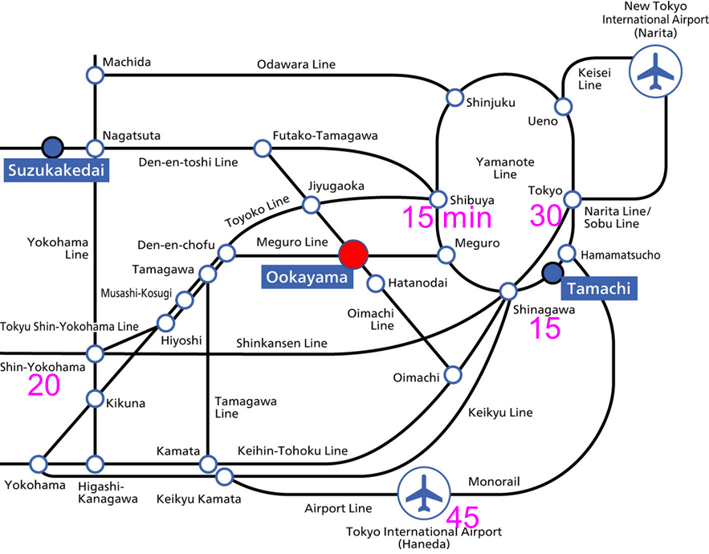

Venue
Digital Multi-purpose Hall, West Building 9
Ookayama Campus, Institute of Science Tokyo
(Formerly Tokyo Institute of Technology)
2-12-1 Ookayama, Meguro-ku, Tokyo 152-8550, Japan
東京科学大学 大岡山キャンパス 西9号館 ディジタル多目的ホール
〒152-8550 東京都目黒区大岡山2-12-1
Access
🚃
By Train
Tokyo Meguro Line
Ookayama Station – 1 min walk
🚇
By Subway
Tokyo Metro Namboku Line
Tokyo Metro Mita Line
Ookayama Station – 1 min walk
🚌
By Bus
Several bus routes stop at Ookayama. Please check the transit app for the latest schedules.
🅿️
Parking
No on-site parking for conference attendees. Please use public transport.

Nearby Hotels
The following areas have hotels within convenient distance of the venue:
- Ookayama
- Meguro
- Jiyugaoka
- Gotanda
We recommend booking early, as availability can be limited in November.